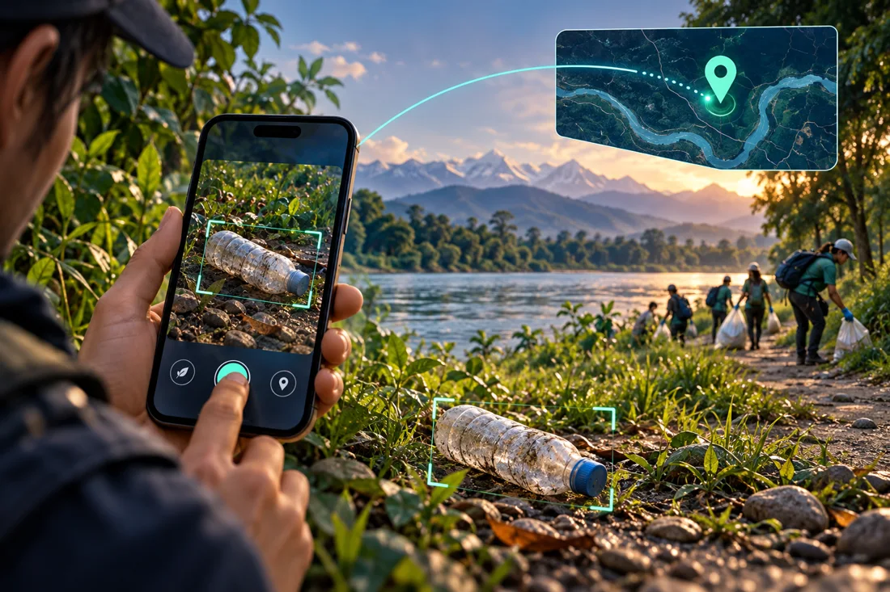

Turning a photo into a useful report
Combine camera/gallery input, model confidence and bounding boxes, GPS, tourist-spot association, description, and severity.
Engineering case study
AI-Assisted Waste Detection & Environmental Reporting
An Android environmental reporting application that connects waste-image analysis with a location-aware review and cleanup workflow.
View repository ↗ (opens in a new tab)
01 / Context
A photo of waste is more useful when it includes location, context, ownership, and follow-up. This project brings tourist reports, administrator review, and department cleanup evidence into one workflow.
02 / System design
Simplified data flow. Each step represents a responsibility, not a guaranteed delivery path.
03 / Implementation
Combine camera/gallery input, model confidence and bounding boxes, GPS, tourist-spot association, description, and severity.
Android uses a bundled five-class LiteRT detector: glass, metal, paper, plastic, and trash. The submission repository does not train a custom model. Browser mock results are a separate development mode.
Admin verification and manual department assignment lead to cleanup evidence and tourist report history/status updates.
JWT authentication, BCrypt passwords, ownership checks, and private-image access accompany the Spring Boot API.
04 / Application walkthrough
Real application screenshots are not yet available in this portfolio.
Planned views: Waste detection, report submission, tourist reports, admin dashboard, and department cleanup workflow.
05 / Evidence & boundaries
Tested on a physical Android phone: camera and location permissions, the report-to-cleanup workflow, and detector evaluation using representative local images. The application connects to a deployed backend with Neon-hosted PostgreSQL; login and reporting do not require a laptop-hosted backend.
Deployment and device-testing update supplied by the project developer, October 2026. This supersedes the older README’s local-setup and restoration-testing notes. Evaluation metrics and the image set are not published here.
Historical Phase 1 documents also record Flutter/backend checks against simulated fixtures; those records describe an earlier project stage.
On-device inference works locally. Login, report synchronization, and maps require network access to the deployed services. Department assignment is manual. The bundled model is integrated, not claimed as custom-trained. Published detector accuracy metrics and broader device coverage remain next steps.
Document the completed device test matrix and detector evaluation results, add application screenshots, and broaden regression coverage for the deployed report-to-cleanup workflow.